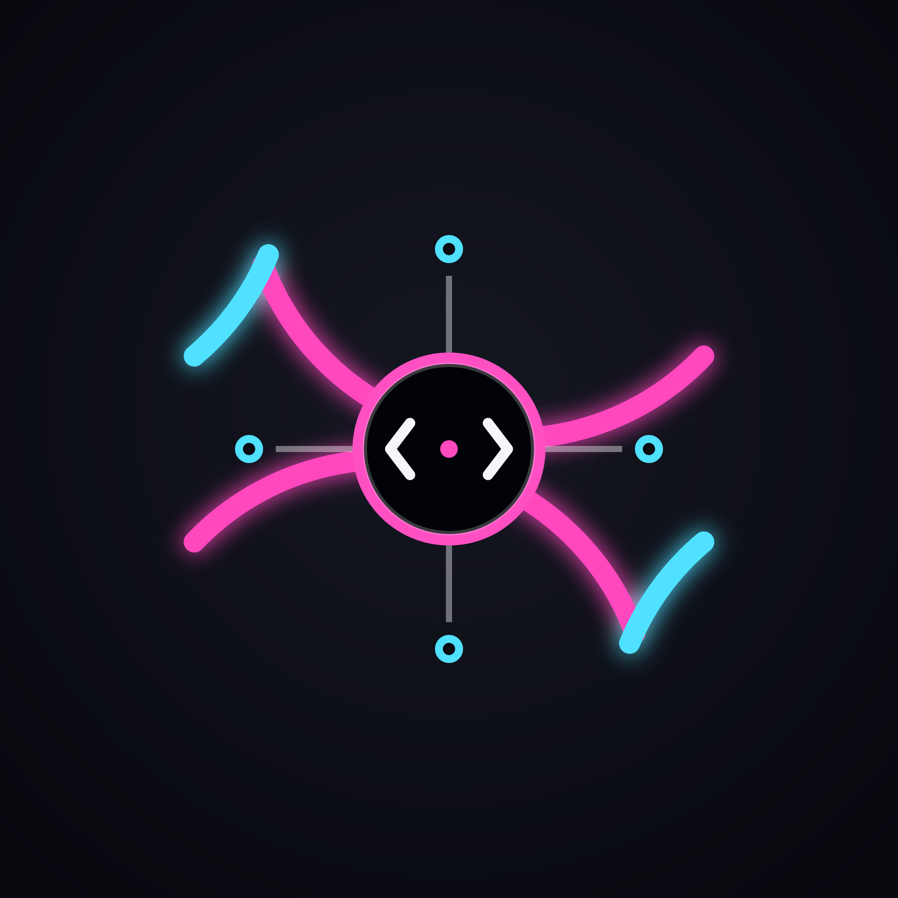

OSS SingularityOpen-source field notes · No. 001
Useful software for curious humans.
We make thoughtful Linux tools, small automations and experiments — open to inspect, adapt and carry forward.

OSS SingularityOpen-source field notes · No. 001
We make thoughtful Linux tools, small automations and experiments — open to inspect, adapt and carry forward.